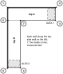
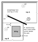
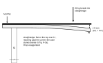
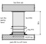

Ten checks, in order, before you call the desk done. Each is an ACCEPTANCE CHECK: a pass or fail you can see or measure. Several of them test a STRUCTURAL ESTIMATE from the design review that has not been measured on this desk; the check says which. Write the results in the boxes and in the sign-off table at the end of this chapter. Datum for every drawing: top A's back-left corner (0, 0).
Measure from the floor to the top face at the six supported corners 1 to 6, then the inside corner 7 last (Fig. K-1). Every reading 83.0 cm ± 0.3 cm (82.7 to 83.3 cm). With the optional ALEX feet fitted, read instead: 2 cm feet 85.0 cm, 4 cm feet 87.0 cm, 6 cm feet 89.0 cm, each ± 0.3 cm. If a corner is out, adjust only what carries it, then measure all seven again (positions x, y in cm): corner 1 (0, 0) by legs L1 and L2; corners 2 (249, 0) and 3 (249, 65) by the ALEX 1 feet; corners 4 (65, 314) and 5 (0, 314) by the ALEX 2 feet; corner 6 (0, 65) by leg L4. Corner 7, the inside corner (65, 65), has no support of its own: it follows the joint, so it is measured last and set by chapter H, never adjusted here.

| Corner | 1 | 2 | 3 | 4 | 5 | 6 | 7 (last) |
|---|---|---|---|---|---|---|---|
| Reading (cm) |
A level across the joint reads flat both ways: across it (1) and along it (2). A fingertip drawn across the joint (3) finds no step. Level the two tops with the OLOV feet and the round feet, never by packing anything under the joining plates.

Rest a straightedge from leg L1's line across the corner. With no weight on, the gap at the corner (R) must read 0.
Set 20 kg (a case of water plus a few books) on top B's inside corner, 10 cm in from both edges, then read the gap at R again: no more than 2 mm. The estimate is about 1 mm. STRUCTURAL ESTIMATE
Lift the weight off. The corner returns to where it was, nothing creaks, no screw or bolt has moved.
Tests: sag at the inside corner (rail A carrying rail B's corner reaction) and corner-joint slip (the six fitting bolts holding by friction). STRUCTURAL ESTIMATE
| Gap, no weight (0) | Gap with 20 kg (mm) | Returned? | Creak / moved? |
|---|---|---|---|

At each of the eight feet F1–F8, rock the pad sideways in its ring by hand. Do not turn it: turning changes its height. None rocks or lifts. A pad that rocks or lifts is not bearing: see chapter L, "Top moves on its ALEX".
Tests: the racking estimate (eight pads captive in their rings hold the frame against a sideways push) and the ALEX load share. STRUCTURAL ESTIMATE

Lay a straightedge across the joint at the inside corner (Fig. K-2, position 4) and write down any step. Check it again after two weeks and after the first month. If today's step is bigger than Day 0's, retighten the six fitting bolts (25 N·m, chapter L).
| Step at the joint | Day 0 | Two weeks | One month | Bolts retightened? |
|---|---|---|---|---|
| mm, and which top is higher |
Tests: corner-joint slip, an estimate, not a measured capacity. STRUCTURAL ESTIMATE
Push the desk sideways along each wall. No sway at the top beyond a few millimetres, and no top moves on its ALEX.
Tests: racking. The OLOV legs give almost no racking resistance; the two ALEX units, locked to the tops by the pads in their rings, do. STRUCTURAL ESTIMATE
No screw tip visible, or felt as a bump, on either laminate face. Run a hand over both tops, above every leg, foot plate, rail screw and joining plate.
Knees clear. Sit at the corner and slide in: nothing within reach of a knee or thigh. The rails' lower edge is 75.1 cm from the floor, 12 cm back from the front edge.
Both ALEX fronts open fully (ALEX 1's drawers, ALEX 2's door) without touching a foot or a leg.
Retighten every screw after two weeks, then repeat check 5.
| # | Acceptance check | Pass when | Structural estimate it tests | Result |
|---|---|---|---|---|
| 1 | Surface height, six corners, then the inside corner | 83.0 cm ± 0.3 cm each (85.0 / 87.0 / 89.0 cm with 2 / 4 / 6 cm ALEX feet) | — | |
| 2 | Level and fingertip across the joint | flat both ways; no step felt | — | |
| 3 | Corner load test, 20 kg | gap 0 with no weight; ≤ 2 mm with it; returns; no creak; nothing moved | sag at the inside corner (estimate about 1 mm); corner joint slip | |
| 4 | All eight pads bear | none rocks or lifts when rocked sideways (never turned) | racking; ALEX load share | |
| 5 | Straightedge at the joint | step written down; re-checked at two weeks and one month; bolts retightened if a step grew bigger than Day 0's | corner joint slip (settling) | |
| 6 | Sideways push along each wall | sway a few mm at most; no top moves on its ALEX | racking | |
| 7 | Screw tips | none visible or felt on either laminate face | — | |
| 8 | Knees clear | nothing in reach; rail lower edge 75.1 cm from the floor, 12 cm back | — | |
| 9 | ALEX fronts | open fully, touch no foot or leg | — | |
| 10 | Retighten every screw | done after two weeks | — |
ACCEPTANCE CHECK pass or fail on this desk. STRUCTURAL ESTIMATE a number from the design review that the check confirms or refutes. If a check fails, see chapter L.
| Checked by | Date | Two-week re-check | One-month re-check |
|---|---|---|---|
Next: chapter L.